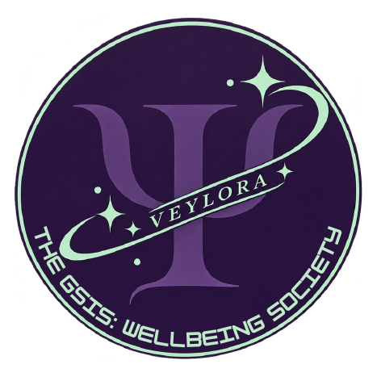
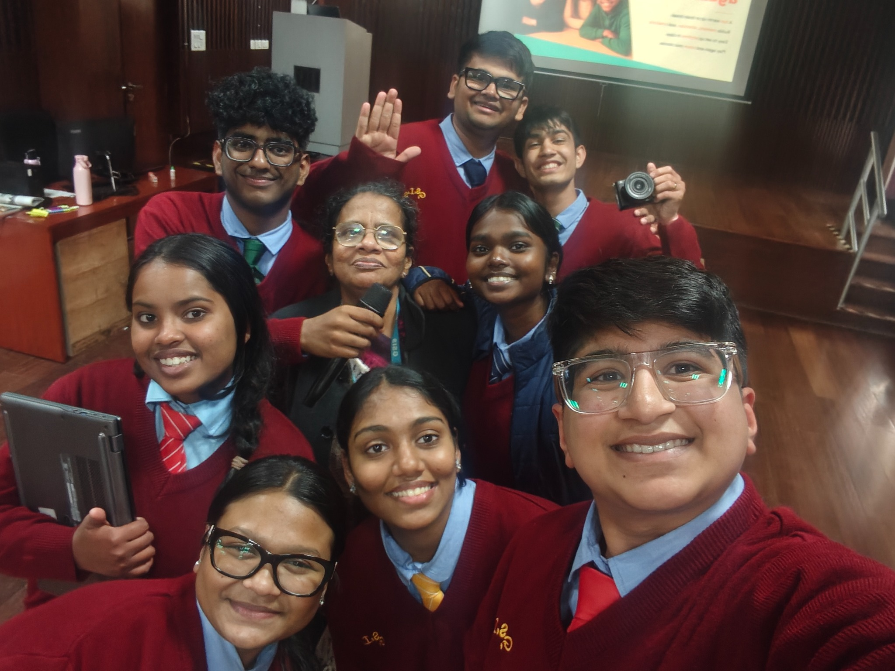

Listen
Make room for people to share and feel heard.

A student-led, faculty-guided wellbeing society making conversations about wellbeing, psychology and everyday life more open, thoughtful and approachable.

Wellbeing isn't one big thing.
It's the little things, too.
Veylora is the GSIS student-led wellbeing society, guided by faculty. We create spaces where students can explore wellbeing beyond the classroom, learn about how people think and interact, and have conversations that feel relevant to everyday life.
We are not a counselling service or a replacement for professional support. Our role is to build awareness, encourage understanding and help make wellbeing easier to talk about.
We believe everyone deserves to be heard without being judged, and that small acts of listening and understanding can make a real difference.
Make room for people to share and feel heard.
Stay curious about different thoughts and experiences.
Choose thoughtful, respectful ways to support one another.
Pause, learn from experiences and keep growing.
Veylora comes to life through students working together, sharing ideas and creating activities that make wellbeing approachable. This is our team, learning and building something together.
Want to connect with us? ↗We use interactive activities and conversations to bring ideas from psychology and wellbeing into everyday school life.
Our pilot outreach session helped us test interactive ways of introducing wellbeing and psychology beyond the classroom.
Completed pilotA drawing-and-passing activity that introduces reconstructive memory and shows how information can change as it moves from person to person.
Interactive activityEveryday school-life scenarios invite students to look at different perspectives, think carefully and discuss what might be fair or helpful.
Scenario-based learningWe have been planning age-appropriate sessions for younger grades and exploring collaboration with Empower360.
Ongoing outreach plansOur plans are about making wellbeing conversations accessible, creative and meaningful for more students.
Continue age-appropriate sessions with MYP and younger-grade students.
Build activities around memory, attention, perception, communication and decision-making.
Explore meaningful partnerships, including planned work with Empower360.
Create simple ways to talk about confidence, friendship, belonging and looking out for one another.
These are ongoing plans and ideas; dates and sessions will be shared when confirmed.
It can show up in friendships, classrooms, choices and the way we treat each other.
There is usually more than one perspective worth understanding.
Giving someone time and attention can be a meaningful place to start.